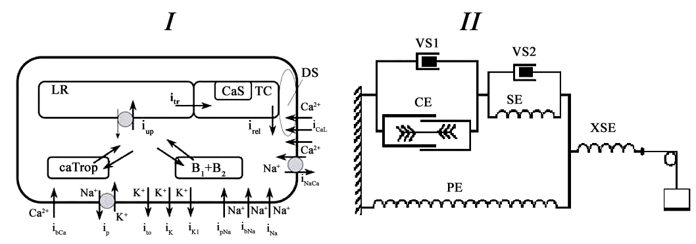

With default setting the model produce isometric contraction (parameter isotonic=0). To switch from isomentric mode to isotonic mode isotonic parameter should be set 1. Then set parameter F_afterload to the value less then the maximum force calculated at isometric mode. Make sure that the model is run in isometric mode first and see the value of the maximum of isometric force. If F_afterload is not less than this value, model performs isometric mode instead of isotonic.
The version of the model used in this study actually deals only with one viscous element VS1, i.e. we assumed here the coefficient of viscosity of the element VS2 to be constantly equal to 0.
ABSTRACT: A mathematical model of the cardiomyocyte electromechanical function is used to study contribution of mechanical factors to rhythm disturbances in the case of the cardiomyocyte calcium overload. Particular attention is paid to the overload caused by diminished activity of the sodium-potassium pump. It is shown in the framework of the model, where mechano-calcium feedback is accounted for that myocardium mechanics may significantly enhance arrhythmogenicity of the calcium overload. Specifically, a role of cross-bridge attachment/detachment processes, a role of mechanical conditions of myocardium contractions (length, load), and a role of myocardium viscosity in the case of simulated calcium overload have been revealed. Underlying mechanisms are analyzed. Several approaches are designed in the model and compared to each other for recovery of the valid myocardium electrical and mechanical performance in the case of the partially suppressed sodium-potassium pump.
|  |
Panel I: Scheme of the ionic currents accounted for in the cardiomyocyte model. The currents modeled ( i_x) contribute to the development of action potential and/or calcium transient. Here i_CaL-Ca2+ influx via L-type Ca2+ channels; i_rel-Ca2+ release from terminal cisterns (TC) triggered by Ca2+ entered from dyadic space (DS); Ca_Trop-concentration of Ca2+ bound by specific troponin C to activate the contractile element (CE) from the rheological scheme (see Panel II); B_1, B_2-concentration of Ca2+ bound by a fast and a slow buffer; i_up -Ca2+ uptake by the sarcoplasmic reticulum pump into longitu-dinal reticulum (LR); i_tr -Ca2+ diffusion between LR and TC; CaS-concentration of Ca2+ complexes with calsequestrin; i_NaCa -sodium–calcium exchange current; i_bCa -background Ca2+ current. Panel II: rheological scheme of a single cardiomyocyte/homogeneous myocardium sample including contractile element CE, three passive elastic elements: parallel element PE , series element SE, extra-series element XSE and two viscous elements VS1 and VS2. The version of the model used in this study actually deals only with one viscous element VS1, i.e. we assumed here the coefficient of viscosity of the element VS2 to be constantly equal to 0. |
The complete original paper reference is cited below:
Mathematical modeling of mechanically modulated rhythm disturbances in homogeneous and heterogeneous myocardium with attenuated activity of na+ -k+ pump Bulletin of Mathmatical Biology, Volume 70, Number 3, 910-949. PubMed ID: 18259823